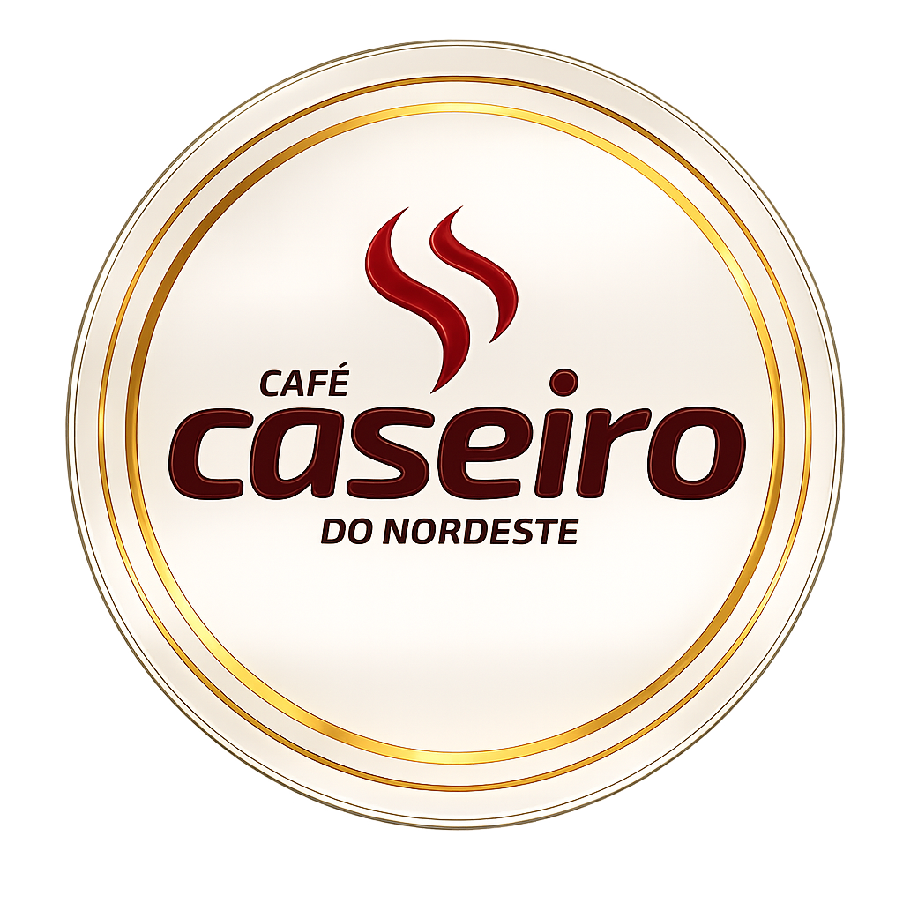
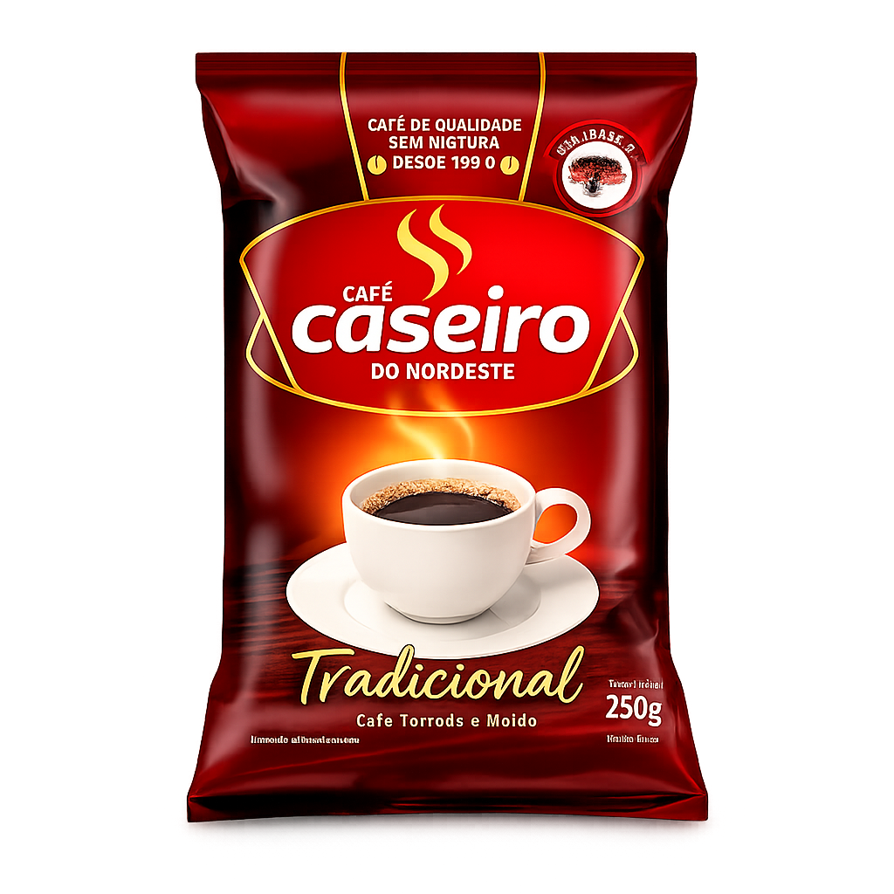
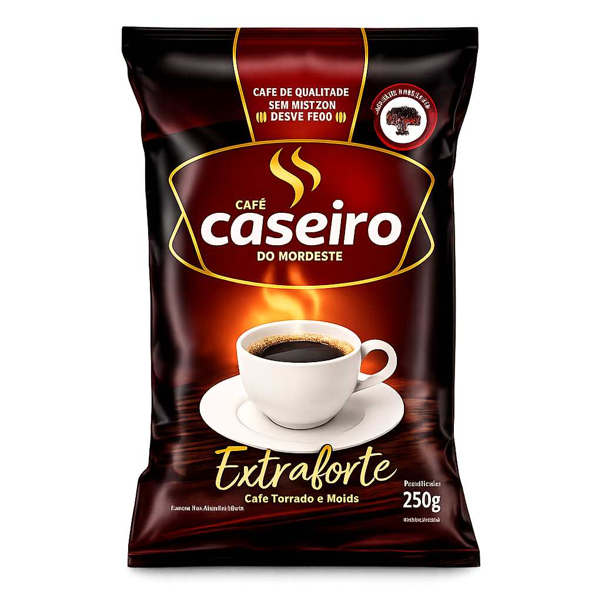

O CAFÉ CASEIRO DO NORDESTE tem a qualidade superior porque é sem mistura e garante mais qualidade e sabor para você e sua familia.
EXPLORAR EXPERIÊNCIA

Nosso café é produzido com os melhores grãos de café Arábica da região. Os grãos selecionados passam por um rigoroso processo de moagem que garante o ponto certo para um sabor único e especial.
Qualidade superior com aroma intenso e sabor marcante.
Processo cuidadoso para garantir mais rendimento e sabor.
Um café pensado para os melhores momentos do seu dia.
Aquele aroma do bom café Caseiro que remete à família e aos amigos são traços marcantes do nosso café.
Viva a experiência de ter o Café Caseiro no seu dia a dia e junte-se a nós pelo bem viver.
Um café encorpado com sabor inesquecível em cada xícara.
Perfeito para compartilhar os melhores momentos do dia.
Qualidade e tradição unidas em um café especial.
Entre em contato conosco e descubra mais sobre os produtos Café Caseiro do Nordeste.